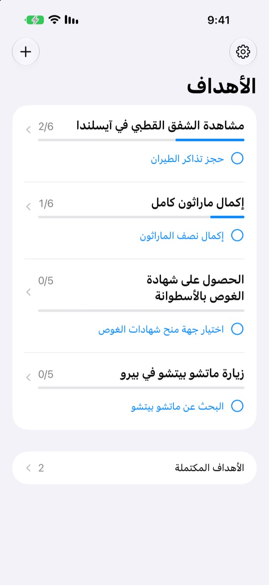
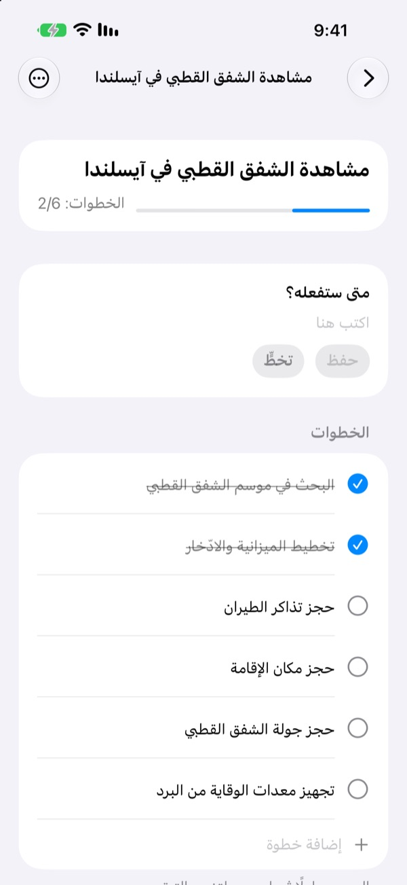
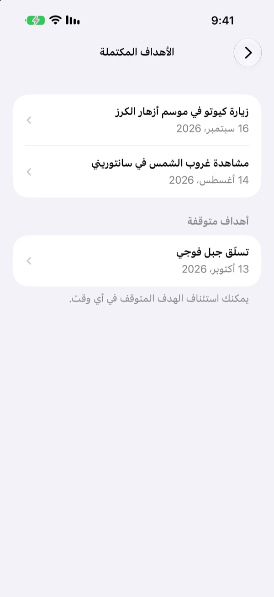

لا تكتفِ بكتابة
قائمة أمنياتك
اكتب هدفًا تريد تحقيقه وقسّمه إلى خطوات صغيرة. تعرض لك الشاشة الأولى الخطوة التالية في كل هدف، فتنجزها من مكانها وتنتقل إلى ما بعدها.
تنزيل مجاني، وحتى خمسة أهداف في وقت واحد. بلا إعلانات.

كم مرة كتبت قائمة أمنياتك ثم نسيتها؟
«مشاهدة الشفق القطبي» هدف كبير لا تعرف من أين تبدأه، فيبقى في القائمة سنوات. يساعدك بحثًا عن الحلم على تقسيمه إلى خطوات تقدر عليها اليوم، مثل معرفة الموسم المناسب والادخار وحجز الطيران، ويعرض لك الخطوة التي تعمل عليها الآن فقط.
كل هدف وخطوته التالية في شاشة واحدة
ترى في الشاشة الأولى مقدار تقدّمك في كل هدف وخطوته التالية. أنجزها بلمسة لتظهر الخطوة التي بعدها.
اكتب خطواتك بنفسك، أو احصل على اقتراحات على الأجهزة المدعومة، وغيّر ترتيبها متى شئت.
سؤال واحد في كل مرة
يسألك الهدف: متى ستفعله، ومع من، وكيف، وما الذي يمنعك الآن، وما العقبة أمامك، وما قيمته بالنسبة إليك. ومع الإجابات يتحوّل الهدف الغامض إلى خطة واضحة.
أضف ملاحظات وصورًا إلى أي هدف، وارجع إلى رحلتك مرتبة حسب التاريخ.

أهدافك المنجزة تتراكم
تجتمع الأهداف المكتملة مع تاريخ إكمال كل منها. وإذا مرّ شهر دون تقدّم في هدف، يسألك التطبيق هل تواصل أم تتوقف، ويمكنك استئناف الأهداف المتوقفة في أي وقت.

ابدأ في ثلاث خطوات
- 1
أضف هدفًا
اضغط زر الإضافة واكتب شيئًا واحدًا تريد تحقيقه، مثل إكمال نصف ماراثون.
- 2
قسّمه إلى خطوات
اكتب الخطوات الأولى، أو اطلب اقتراحات على الأجهزة المدعومة.
- 3
أنجز الخطوة التالية
حدّدها كمنجزة من الشاشة الأولى، وأكمل الهدف حين تنتهي خطواته.
ابدأ مجانًا، وانتقل إلى Pro حين تريد المزيد
مجاني
- حتى 5 أهداف في وقت واحد
- الخطوات واقتراحات الخطوات
- الملاحظات والصور
- تصدير الملاحظات والنسخ الاحتياطي
- Siri والاختصارات
بحثًا عن الحلم Pro
- كل ما في النسخة المجانية
- أهداف بلا حدود
اشتراك أسبوعي أو شهري أو سنوي، أو شراء لمرة واحدة مدى الحياة. يتجدد الاشتراك تلقائيًا ما لم تُلغِه قبل نهاية الفترة بـ24 ساعة، ويمكنك إلغاؤه من إعدادات حسابك في App Store.
إن كنت قد اشتريت التطبيق سابقًا فلديك Pro بالفعل. الإكراميات في الإعدادات لا تفتح أي ميزة. بلا حساب وبلا إعلانات.
أسئلة شائعة
كيف أبدأ؟
اضغط زر الإضافة في الشاشة الأولى، واكتب هدفك وخطواته الأولى. تظهر الخطوة التالية تحت الهدف، فحدّدها كمنجزة حين تنهيها.
هل يمكنني تعديل الخطوات أو تغيير ترتيبها؟
نعم. في صفحة الهدف المس الخطوة مطولًا لتعديل اسمها، واسحبها لتغيير ترتيبها، أو اسحب إلى الجانب لحذفها.
كيف أوقف هدفًا أو أستأنفه؟
من قائمة المزيد في صفحة الهدف اختر إيقاف. ينتقل الهدف إلى «أهداف متوقفة» في شاشة الأهداف المكتملة، ومن هناك يمكنك استئنافه في أي وقت.
كيف أنقل أهدافي إلى iPhone جديد؟
فعّل النسخ الاحتياطي التلقائي إلى iCloud من الإعدادات، ثم استعد النسخة على الجهاز الجديد. ويُنقل كل شيء كذلك عند استعادة iPhone جديد من نسخة iCloud أو من الكمبيوتر.
هل في التطبيق مشتريات؟
كل الميزات مجانية حتى خمسة أهداف في وقت واحد. اختر Pro لتضيف ما تشاء من الأهداف. يمكنك الاختيار بين اشتراك أسبوعي أو شهري أو سنوي، أو شراء لمرة واحدة مدى الحياة. إن كنت قد اشتريت التطبيق سابقًا فلديك Pro بالفعل.
هل تُرسَل أهدافي وملاحظاتي إلى أي مكان؟
لا. لا يوجد حساب ولا إعلانات ولا أدوات تحليل. تبقى أهدافك وملاحظاتك وصورك على جهازك، وتُحفظ النسخة الاحتياطية في iCloud الخاص بك إن فعّلتها.
كيف أتواصل معكم؟
للإبلاغ عن مشكلة أو اقتراح فكرة أو أي شيء آخر، استخدم «إرسال ملاحظات» في إعدادات التطبيق، أو راسلنا على إنستغرام (@lee25_ios).
لديك سؤال أو مشكلة؟ راسلنا على leeo@kakao.com.